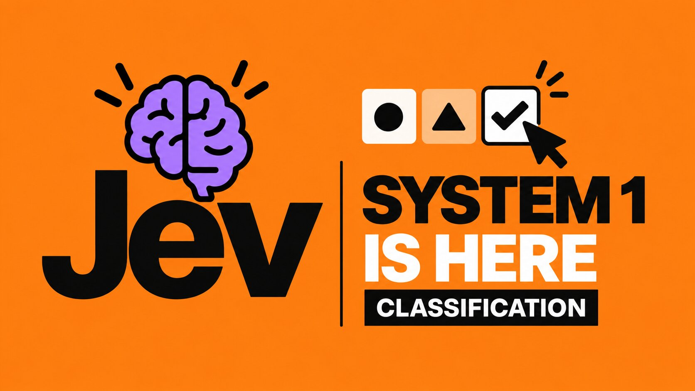

Jev может изменить архитектуру ИИ-агентов — и вот почему
 @andre_dataist
@andre_dataist
Большие языковые модели научили агентов рассуждать, писать код и строить планы. Но сегодня мы заставляем их делать ещё и сотни мелких решений: какой инструмент вызвать, достаточно ли данных, продолжать ли работу, опасно ли действие. Jev предлагает вынести такие решения в отдельный быстрый и дешёвый слой.

15 сентября TypeSafe AI выпустила Jev — первую публичную модель класса, который компания называет System One Models. Она не предназначена для написания статей, диалогов или длинных рассуждений. Jev получает описание ситуации и возвращает заранее заданный тип решения вместе с вероятностями. TypeSafe описывает это как «неструктурированное состояние на входе — типизированные вероятностные решения на выходе».
Большая языковая модель
- строит план
- рассуждает
- пишет текст и код
- работает с неоднозначной задачей
Модель решений
- выбирает действие
- оценивает риск
- маршрутизирует запрос
- решает «продолжать / остановиться»
Идея кажется простой, но она бьёт в слабое место современных ИИ-агентов. Сегодня GPT или Claude часто вызывают не потому, что нужно сложное рассуждение, а потому что программе надо принять маленькое смысловое решение. Это похоже на ситуацию, в которой профессор математики каждый раз решает, на какую кнопку нажать.
Большая модель может оставаться «мозгом» агента. Jev пытается забрать его рефлексы.
Jev не пишет ответ — он выбирает
В Jev передаётся текущее состояние: письмо, документ, данные из CRM, история действий агента, фрагмент страницы или другой текстовый контекст. После этого можно задать несколько вопросов. Они оцениваются относительно одного состояния параллельно.
В одном запросе можно одновременно спросить, какой агент нужен, нужен ли интернет, достаточно ли контекста, есть ли риск и требуется ли участие человека. Именно параллельность и отказ от генерации длинной строки дают модели её экономику.
TypeSafe также говорит, что Jev обучается методом RLCD — Reinforcement Learning for Calibrated Decisions: вместо красивого ответа модель должна выдавать полезные для программы вероятности. Подробный рецепт обучения и устройство модели при этом не опубликованы, поэтому заявления о «новой архитектуре» пока нельзя независимо воспроизвести.
По сути, это новый вариант if
До сих пор разработчик обычно выбирал между жёстким правилом и большой языковой моделью. Jev добавляет промежуточный вариант: условие остаётся программным, но становится смысловым.
Надёжно, если условие можно формализовать.
Это позволяет использовать ИИ не только по запросу человека, а на каждом событии внутри программы: пришло письмо — оценили; агент сделал шаг — проверили; появился новый лид — присвоили признаки; изменился документ — определили риск.
Самый очевидный сценарий — вынести из большой модели микрорешения
Внутри одного сложного запроса агент десятки раз решает: какой инструмент вызвать, продолжать ли поиск, повторить ли попытку, достаточно ли доказательств, можно ли выполнить действие автоматически. Vercel уже выделяет выбор инструментов и подагентов, продолжение или остановку, проверку риска и результата среди основных сценариев Jev. По данным Vercel, в первые 24 часа Jev использовали почти 13% платных команд AI Gateway — рекорд для нового запуска на платформе.
план→ Jev
выбор следующего шага→ инструмент→ Jev
проверка
1000 писем и семь решений на каждое
Хорошо показывает идею тест Нейта Херка. Он прогнал 1000 писем через семь правил — срочность, спам, необходимость ответа и другие признаки. После распараллеливания Jev обработал набор примерно за 6 секунд и $0.09. GPT-5.6 Luna в его сравнении потребовалось около 5 минут и $0.62 на более узкую проверку. Это авторский тест, а не независимый бенчмарк, но он хорошо показывает экономику массовых мелких решений.
Из этого же теста хорошо видна ещё одна область: Jev можно поставить между человеком и информационным потоком. Посты в X, сообщения, комментарии, записи встреч или фрагменты видео получают признаки вроде «важно», «новость», «сильный фрагмент», «нужно ответить». Большая модель подключается только к небольшой части потока, где действительно надо написать ответ или сделать вывод.
Браузерный агент может работать без генеративной модели на каждом шаге
TypeSafe уже показала экспериментальный браузерный агент, где Jev выбирает операцию из закрытого набора: нажать, ввести текст, выбрать элемент, прокрутить, подождать или закончить. Код сам получает структуру страницы и исполняет выбранное действие. В официальном playground для двух браузерных сценариев генеративная модель вообще не требуется.
Это меняет саму схему управления компьютером: сильная модель может один раз построить общий план, а быстрая модель решений выполнить десятки локальных шагов и вернуть управление, только если застряла.
Jev как дешёвый контролёр ИИ-агентов
Перед опасным действием можно спросить: разрушительно ли оно, обратимо ли, соответствует ли задаче, требуется ли подтверждение человека. После выполнения — действительно ли задача закончена, есть ли доказательства результата, прошли ли тесты, нужен ли повтор.
LangChain уже протестировала Jev в роли судьи для результатов агентов. В небольшом эксперименте он работал в среднем за 0.44 секунды и стоил около $0.00035 за оценку, при этом результаты были заметно стабильнее повторных оценок языковых моделей. Авторы отдельно предупреждают: исходных сценариев было мало, поэтому это сигнал, а не доказательство универсального превосходства. Сейчас Jev уже доступен как судья в LangSmith Evals.
ИИ начинает встраиваться прямо в программную инфраструктуру
Один из самых необычных проектов — расширение PostgreSQL pg-jev. Оно позволяет фильтровать и ранжировать строки с условием на обычном языке — без отдельной векторной базы и заранее обученного классификатора.
Похожая идея появилась в Home Assistant: Jev превращает состояние дома в виртуальные смысловые датчики. Вместо только «дверь открыта» или «температура 27°» можно получить «дом выглядит пустым», «стирку, похоже, забыли», «происходит что-то необычное». Интеграция HA-Jev публикует такие ответы как обычные сенсоры.
Из графа знаний — в живую модель состояния
Если такие признаки постоянно пересчитывать, граф знаний перестаёт быть просто архивом фактов. Он начинает хранить ещё и текущее смысловое состояние объектов.
последний контакт = 4 дня назад
история сообщений = 126
недовольство = .92
нужно внимание человека = .88
Одни значения может считать обычный код, другие — SQL, третьи — Jev, а сложные выводы — большая модель. Тогда память агента становится не только хранилищем, но и постоянно обновляемой моделью мира.
ИИ предполагает — код проверяет
В playground TypeSafe есть эксперимент Jev + Z3: модель быстро оценивает, противоречив ли набор ограничений, а математический решатель затем даёт точный ответ. Это хороший общий принцип для надёжных систем.
Например, Jev может дать высокую вероятность, что счёт подозрителен, а обычный код уже проверит: изменился ли IBAN, новый ли поставщик, превышен ли лимит. Мы не делаем ИИ источником истины — мы используем его как дешёвую смысловую интуицию поверх строгих правил.
Маркетинговые заявления впечатляют, независимые тесты — спокойнее
TypeSafe сообщает для собственных рабочих сценариев значения вплоть до 193.6 раза быстрее и 444.6 раза дешевле языковых моделей и сама отмечает, что это верхняя граница ожидаемого выигрыша. В независимом тесте AY Automate на 791 размеченном решении разница оказалась заметно скромнее — но всё равно полезной.
Вывод теста простой: Jev ведёт себя скорее как хорошая небольшая модель, а не как более дешёвая замена сильной модели. Он был примерно в 2–3.6 раза быстрее и в 4.7–7.5 раза дешевле самых дешёвых небольших моделей в сравнении; против Terra — в 40–49 раз дешевле на этих задачах. Код и сырые результаты теста опубликованы.
Самый сильный сценарий — каскад моделей
Настоящая ценность Jev появляется не тогда, когда он заменяет GPT, а когда он решает, нужно ли GPT вообще вызывать.
В независимом тесте AY Automate запросы с высокой уверенностью оставляли Jev, а остальные передавали Terra. На 8-классовой задаче такой каскад достиг 90.0% против 89.4% у Terra, при этом к Terra ушло только 19.4% запросов, а стоимость составила около 25.7% от варианта «всё через Terra». Выборка небольшая и порог подбирался на тех же данных, поэтому это не производственная гарантия — но сам принцип очень сильный.
Даже очень уверенная модель может ошибаться. Порог автоматизации нужно калибровать на собственных размеченных примерах, а не выбирать «0.9» на глаз.
Практическая схема: собрать хотя бы сотню типичных примеров с правильными ответами, прогнать их через Jev и текущую модель, выбрать порог на отдельной проверочной выборке, а спорные случаи отправлять более сильной модели или человеку.
Jev не заменяет планирование и сложное рассуждение
Официальная документация сама перечисляет слабые места: длинные логические цепочки, арифметика, сравнение дат, большой объём нерелевантного контекста, противоречивые инструкции и враждебный ввод. Модель текстовая — изображения и видео она сама не «видит».
Эксперимент с шахматами в playground хорошо показывает границу: выбрать правдоподобный следующий ход — не то же самое, что просчитать комбинацию на много ходов вперёд.
Jev не должен выдавать значение вне заданной схемы: если разрешены только «продажи / поддержка / финансы», четвёртого отдела не появится. Но модель может с высокой уверенностью выбрать неправильный вариант. Типобезопасность результата и правильность решения — разные вещи.
Похоже, формируется отдельный класс моделей решений
Через несколько дней после запуска появились открытые аналоги. Например, проект Laya использует похожие примитивы выбора, оценки и вероятности и публикует веса. Его авторы показывают локальную работу на небольших моделях и поддержку многих языков. Конкретные цифры проекта ещё нужно независимо проверять, но сам факт важнее: Jev уже породил категорию.
Семантический процессор
Обычный классификатор обычно решает одну заранее заданную задачу — например, «спам / не спам». Jev позволяет прямо во время работы программы сформулировать новый смысловой вопрос: недоволен ли клиент, опасно ли действие, нужен ли документ, закончил ли агент работу, какой инструмент выбрать.
Если одно смысловое решение становится достаточно дешёвым, ИИ можно запускать не «когда человек спросил», а практически на каждом событии внутри системы.
Именно поэтому Jev интересен не как очередной конкурент GPT. Возможно, он показывает следующий этап архитектуры ИИ: большая модель больше не обязана быть одновременно мозгом, диспетчером, контролёром, классификатором и судьёй. Она может заниматься тем, ради чего действительно нужна, — сложным рассуждением. А быстрые локальные решения уходят в отдельный слой.